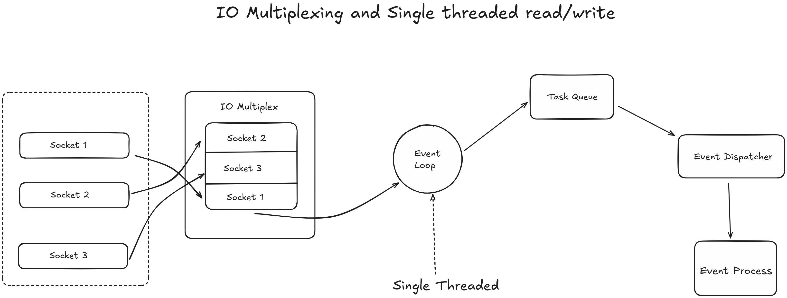

Whenever I have talked about redis in my projects people woud think it as a cache to use . But redis is more than that we can use redis as rate limiter, message broker and as a database ... But what is even redis, why is it even so fast and how are we even using it . Raising all this question made me curious about this topic and so I want you to be ...
Lets first start with What is Cache so its simple caching is like keeping frequently used items on your desk instead of fetching them from a storage room. Caching stores frequently accessed data in a temporary, high-speed storage layer, reducing latency and improving performance by minimizing redundant computations or database queries. Now Redis is our high speed storage layer stands for remote dictionary server, its a single threaded, in memory data structure storage model .. Which means unlike databases like PostgreSQL, MySQL which stores data on slower mechanical or solid state drives, redis keeps all its data in RAM. This means every read and write operation happens at memory speed wihtout the worrying about disk input / output
There are three main pillers behind this speed, first being the In Memory Data Storage, this is the most significant factor as accessing data from RAM is orders of magnitude faster than from even the fastest SSDs or NVMe drives. Main memory access latency is typically in the nanosecond range, while disk access is in the microsecond to millisecond range. By keeping the entire dataset in RAM, redis eliminates biggest bottleneck in database systems which is disk I/O
Second reason being Single threaded command execution, redis processes all commands on a single thread. This design avoids the overhead of multithreading. There are no locks to acquire, no context switching between threads and no race conditions to manage. The CPU can focus purely on executing commands sequentially without interruption, which is incredibly efficient for the workload Redis is designed for (many small, fast operations).
Third reason being highly optimized C code and data structures, redis is written in ANSI C, a language known for its performance. Beyond the language, it uses custom, highly-tuned data structures. For example, its Simple Dynamic String (SDS) and the various encodings for Hashes and Sets (like ziplists) are designed to minimize memory usage and CPU cycles for common operations, ensuring that not only is the data in RAM, but it's stored in the most efficient way possible.
You might get a question that redis must handle thougsand of concurrent client connections and execute commands with microsecond latency, what architectural mode allows it to manage this so effieciently??
The core of Redis's command processing is single threaded. This means it uses a single CPU core to process all incoming commands, parse them and execute them. This choice is intentional,as it eliminates the complexity and performance overhead of multithreading, such as lock contention, race condition and context switching
To handle concurrency, redis employes an event driven architecture using an I/O multiplexing mechanism. The main thread runs an event loop that uses system calls epoll, kqueue or IOCP to effieciently observe multiple network sockets
Lets take up a scene in which you are the only one who knows how to cook and chop veggies, but you can only chop one ingredient at a time(the single redis thread). But you have multiple assistants (your friends ofc) (the operating system's I/0 multiplexing features, like kqueue and IOCP). You told your friends to watch all these pots on the stove. The moment one is ready, they should inform you. All this to not waste your time standing and string at the pots. Instead you chop veggies, when one of your assistant shouts, "pot#3 is boiling !!" then you immediately stop what ever was being done, deal with that pot and then go back to chopping. So in this scenario you are the redis main event loop, pots are client connections and your friends are the operating system's kernel, which efficiently notifies Redis when a client has sent a request or is ready to receive a response.
So this is what the actual process looks like :
This non-blocking I/O model ensures the single thread is never idle waiting for network or disk operations. It is always busy processing events, which is how it achieves high throughput and concurrency with a single thread.
As a engineer you should get this question, that Redis's primary storage is volatile RAM. What mechanisms does it provide to ensure data persistence and durability, allowing it to recover from server restarts or crashes?
Redis provides two distinct, complementary persistence mechanisms to save the in-memory dataset to non-volatile storage.
To prevent the AOF file from growing indefinitely, Redis can automatically rewrite it in the background. It forks a child process that writes the minimal set of commands needed to recreate the current dataset into a new, temporary AOF file, which is then atomically swapped with the old one.
For maximum durability, it is common practice to use both AOF for near-real-time persistence and RDB for periodic backups.
Lets take a some good use cases of redis in production grade application
First which is commonly known and used by every developers and engineers out there, Redis as cache layer.
Lets say you have a web application where users frequently view their profiles fetching this data from a disk based database like MySQL everytime can be slow instead we can use redis to cache the user profile data so when a user requests their profile the application first checks redis, if the desired data is in redis it's a cache hit it is returned immediately, if the data is not in redis it's a cache miss the cache miss the application fetches it from the primary database stores it in redis and then returns it to the user. The data in redis can have TTL or Time To Live so it can automatically expire after a certain time for example say 15 to 20 minutes to ensure fresh is there all the time.
Second scenario is using Redis as Database specially for use cases where speed and low latency are very much important, just like building a gaming application.
Here we need to maintain a realtime leaderboard where player scores are constantly updated and we need to display the top 10 players instantly. So here we can use redus as sorted set data structure to store player scores, each player score is added to the sorted set with their ID as the key and the score as the value this automatically sorts the scores so we can quickly retrieve the top 10 players using a single command like ZREVRANGE leaderboard 0 9. Redis can then process this data to disk using RDB or AOF to ensure durability.
What internal data structures and optimizations allow it to store complex data types with minimal overhead?
Redis's memory efficiency stems from its use of custom, highly-optimized data structures and dynamic encoding strategies.
That's all from my side for the very first part of deep diving into redis, we got more parts for redis to explore for next few blogs :) Hope I was able to add few value to your today's learning :)